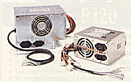

Napajanje

Vrlo bitna komponenta kompjutera. To najbolje znaju sami serviseri, napajanje je za veæinu "crna (èitaj siva) kutija". Uloga napajanja je da obezbedi jednosmerne napone od +/- 5V i +/- 12V.